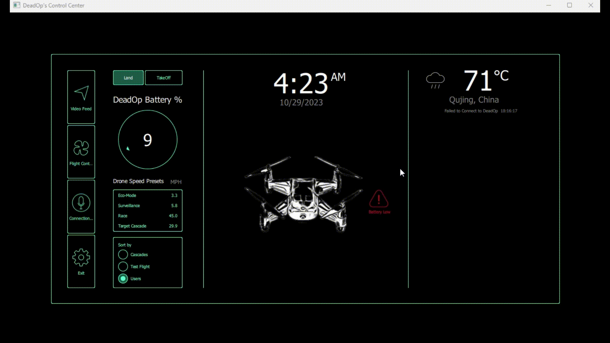

<!doctype html>
<html>
    <head>
        <meta charset="utf-8">
        <meta name="viewport" content="width=device-width, initial-scale=1"/>
        <link rel="stylesheet" href="/style.css" type="text/css"/>
        <title>Taking Flight with Code: DJI Tello Drone Open Source Fun</title>
    </head>
    <body>
        <header class='header'>
            <a class="logo" href="index.html">home</a>
            <nav>
                <a href="https://www.github.com/ZeshanHussain">github</a>
                <a href="/about">about</a>
            </nav>
        </header>
        <div class="container">
            <h1 class="title">
                Taking Flight with Code: DJI Tello Drone Open Source Fun        <br>
                <span class="subtitle"></span>
            </h1>
            <ul class="tags">
                <li>
                    <a href="/tags/c++">c++</a>
                </li>
                <li>
                    <a href="/tags/opencv">DJI TELLO</a>
                </li>
            </ul>
            <p>
                Check out the DJI Tello Drone! Its a lightweight quadcopter that's perfect for anyone into coding and tech. There are tons of open-source projects on platforms like GitHub with libraries and tutorials that make it easy to get started. The Tello is super popular in schools, letting students explore programming, robotics, and computer vision through fun, hands-on projects.

                I actually coded and built a custom Graphical User Interface (GUI) for the Tello using Qt Creator and C++. Thanks to the DJI Tello API, my program comes packed with cool features. It includes an AI-powered video streaming module, which gives a real-time, high-quality video feed straight from the drone.
                
                The interface makes it easy to monitor the drone's connection, shows your location, and even grabs the current date and weather info. I also added precise flight controls, so you can fly the drone smoothly and accurately. Plus, it displays the drone's battery level, so you always know how much power you have left.
                
                This project shows how I combined C++ programming with the DJI Tello API to create a sleek, feature-rich interface for controlling the drone.      <sup class="footnote-reference">
                    <a id="footnote-reference-1" href="#footnote-1">1</a>
                </sup>
                
            </p>
            <hr>
            <p>
              
            </p>
            <ul>
                
            </ul>
            <hr>
            <p>Tello DJI Open Source</p>
            <div class="src src-bash">
                <div class="highlight">
                    <pre style="background-color:#fff;">
                        <code>
                            

                            <span style="display:flex;">
                                <span>
</span> 

<video width="920" height="840" autoplay loop muted>
    <source src="new.mp4" type="video/mp4" />
  </video>


 

                        </code>
                    </pre>
                </div>
            </div>
            <p>How it works:</p>
            <ol>
                <li>Collect Postive and Negative Datasets for Machine learning task</li>
                <li>After Training, deploy the cascade file into the C++ program</li>
                <li>My C++ program consists of using the OpenCV framework. Using this framework helped me create a clear goal for object detection.</li>
                
            </ol>
            <p>And yup, that works. But not without jumping through a few hoops:</p>
            <ul>
                <li>
                    We can use this basic technology to save many lives. During active threat situations on school grounds, the attacker often comes from an entry point around the school, which can catch staff, teachers, and students off guard. Having a detection system can cut response time in half and save many lives. In situations like this, every second really matters. 
                    <div class="src src-bash">
                        <div class="highlight">
                            <pre style="background-color:#fff;">
                                <code>
                                    <span style="display:flex;">
                                        
  <span style="color:#4300ec">#include</span> <span style="color:#48a8e4">"tellocontroller.h" </span> </span><span style="color:#4300ec">#include</span> <span style="color:#48a8e4">opencv2/highgui/highgui.hpp </span>
<span style="color:#4300ec">#include</span> <span style="color:#48a8e4">iostream </span></span>
<span style="color:#4300ec">#include</span> <span style="color:#48a8e4">QDebug </span></span>

<span style="color:#ee8300">using namespace std; </span>
<span style="color:#ee8300">using namespace cv;</span>

<span style="color:#711eb5"> 
    TelloController::TelloController(QObject *parent)
    : QObject(parent)
{
    // Initialize your Tello object if necessary

    // Set up the connection check timer
    connectionTimer.setInterval(5000); // Check every 5 seconds
    connect(&connectionTimer, SIGNAL(timeout()), this, SLOT(checkConnection()));
    connectionTimer.start();
}

void TelloController::checkConnection()
{
    if (!DeadOp.is_connected()) {
        // Attempt to reconnect
        if (!DeadOp.connect("192.168.10.1", 8889)) {
            qWarning() << "Failed to Connect to Drone";
        }
        else {
            qCritical() << "Connection has been Established";

        }
    }
}

void TelloController::performDroneMovements()
{
    // Ensure the connection is established before sending commands
    if (DeadOp.is_connected()) {
        if (DeadOp.takeoff()) {
            std::cout << "deadOp has moved!\n";
            DeadOp.set_speed(20.0);
            DeadOp.move_right(70);
            DeadOp.move_forward(20);
            DeadOp.move_left(70);
            DeadOp.move_back(60);
            DeadOp.move_right(40);
            DeadOp.move_forward(40);
            DeadOp.move_left(20);
            DeadOp.land();
        }
    } else {
        std::cerr << "Tello drone not connected!" << std::endl;
    }
}


</span>


                                    

                                    <span style="display:flex;">
                                        <span>
                                           
                                        </span>
                                    </span>
                                    <span style="display:flex;">
                                        <span>
  
                                        </span>
                                    </span>
                                    <span style="display:flex;">
                                        <span>
                                            
                                        </span>
                                    </span>
                                </code>
                            </pre>
                        </div>
                    </div>
                    <p>
                  
            <p>For now it works well enough - lets build GuardianSafe. Type shit.</p>
            <div id="outline-container-headline-1" class="outline-2">
                <h2 id="headline-1">Footnotes
</h2>
            </div>
            <div class="footnotes">
                <hr class="footnotes-separatator">
                <div class="footnote-definitions">
                    <div class="footnote-definition">
                        <sup id="footnote-1">
                            <a href="#footnote-reference-1">1</a>
                        </sup>
                        <div class="footnote-body">
                            <p>Rest in peace to all the lives lost in the Uvalde shooting. It was surreal sitting at my high school graduation just a few weeks after the shooting, knowing an entire generation of young souls took rounds from high-caliber rifle. That bastard shooter tortured those kids to death. Burn in hell, Salvador Ramos. </p>
                            <p>I got into angular pretty soon after I started programming and boy did it fuck with my brain. So much black magic.
I haven &#39;t done much frontend stuff since and want to get into that again - so yeah& Prepare for yet another framework. I &#39;m sorry world.</p>
                        </div>
                    </div>
                    <div class="footnote-definition">
                        <sup id="footnote-2">
                            <a href="#footnote-reference-2">2</a>
                        </sup>
                        <div class="footnote-body">
                            <p>
                                For more info, check e.g. <a href="https://docs.opencv.org/4.x/de/d37/group__objdetect__cascade__classifier.html">OpenCv Documentation</a>
                                
                            </p>
                        </div>
                    </div>
                    <div class="footnote-definition">
                        <sup id="footnote-3">
                            <a href="#footnote-reference-3">3</a>
                        </sup>
                        <div class="footnote-body">
                            <p>
                                <a href="https://unix.stackexchange.com/questions/366797/grep-slow-to-exit-after-finding-match">https://unix.stackexchange.com/questions/366797/grep-slow-to-exit-after-finding-match</a>
                                - so that &#39;s why pipes sometimes seem to get &#34;stuck &#34;- never thought about how things work. TIL.
                            </p>
                        </div>
                    </div>
                </div>
            </div>
        </div>
    </body>
</html>
